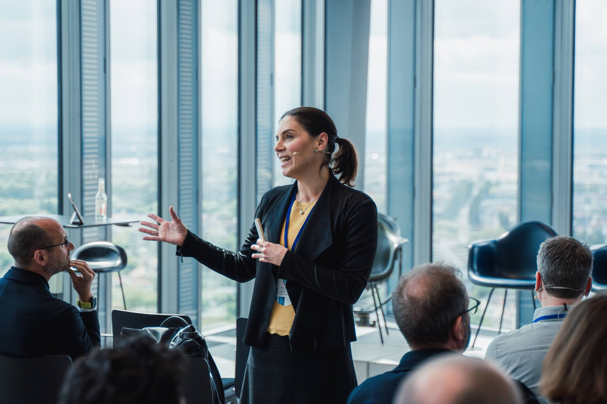

About
Hana Milanov is Professor of Entrepreneurship at IMD in Lausanne. She has lived and worked in five countries, and her research looks at how new ventures get off the ground.
Her work studies how founders spot opportunities, raise resources when they start with very little, and handle the human side of building a company, including questions of identity, team, and career. It has been published in leading journals such as the Strategic Management Journal and the Journal of Business Venturing, and covered in the press, including Forbes.
Before IMD she spent more than a decade at the Technical University of Munich, where she served as Senior Vice President for International Alliances and Alumni and directed the EMBA in Innovation and Business Creation, ranked first by the Financial Times.
My research interests
Opportunity recognition
How founders notice and develop the opportunities they choose to pursue.
Resourcefulness under scarcity
How early ventures build something out of very little, often through bricolage.
Gender and inclusion
Funding gaps in femtech, bias in crowdfunding, and how male allyship can help.
Networks and status
How a venture's first relationships shape its reputation and its growth abroad.
Selected publications
- 2026Can Lack-of-Fit Penalties Apply to Male Entrepreneurs? Equity Fundraising in Femtech.
Entrepreneurship Theory & Practice, with Seigner and Lundmark - 2023Tweeting like Elon? Confrontational language and social media engagement for new ventures.
Journal of Business Venturing, with Seigner and Lundmark - 2021Beyond bricolage: early-stage technology ventures' resource mobilization under extreme scarcity.
Journal of Business Venturing, with Reypens and Bacq - 2014When do domestic alliances help new ventures abroad?
Journal of Business Venturing, with Fernhaber - 2013The power of the first relationship: initial network and future status.
Strategic Management Journal, with Shepherd
Teaching and executive education

- Approach Participant-centered classes that build critical and creative thinking, taught from bachelor to PhD, in five countries, and in person, online, and hybrid.
- Academic Director EMBA in Innovation and Business Creation, with UnternehmerTUM. Ranked first by the Financial Times in 2023 and 2024.
- Corporate programs Custom executive teaching for Siemens, GE Aerospace, and Sandoz, plus faculty roles on the IE-Brown EMBA.
- Recognition Several best-teaching awards at TUM and IE Business School, across executive and online formats.
Speaking and media
- In the press Research covered in Forbes (2024 and 2025) on parenthood and startup culture, and on DEI allyship.
- Award Named one of Germany's top 20 entrepreneurship professors (Unipreneurs, 2023).
- Editorial Associate Editor, Journal of Business Venturing Insights.
- Keynotes UnternehmerTUM, EXIST Women, Motius and Spacewalk, TU Dortmund, and others.
- Advisory Investment committee at Spacewalk VC, and board member at CDTM.
- Podcasts Mostly Awesome (CDTM). [CHECK] which to feature
Get in touch
For speaking, executive programs, research collaboration, or doctoral supervision.
hana.milanov@imd.orgImpressum
Information provided as legally required. [CHECK] confirm jurisdiction: Germany (§ 5 DDG) or Switzerland
Responsible for content
Prof. Hana Milanov
Address
[CHECK] postal address
Contact
Email: hana.milanov@imd.org
Phone: [CHECK] phone number
VAT identification number
[CHECK] if applicable
Liability and copyright
[CHECK] standard liability/copyright disclaimer text